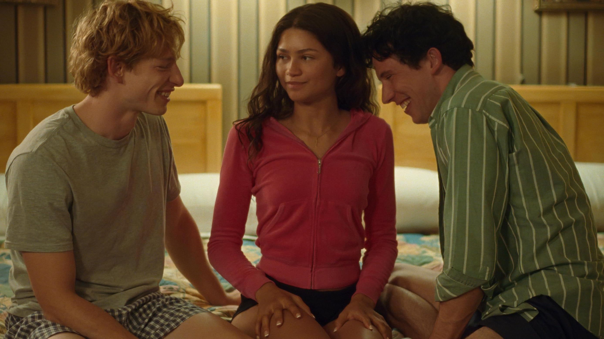
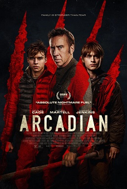
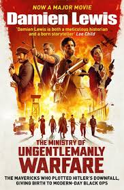
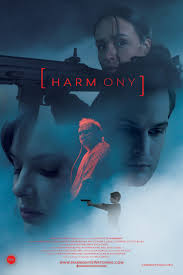
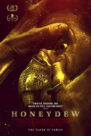

30 MOST POPULAR MOVIES RIGHT NOW: WHAT TO WATCH IN THEATERS AND STREAMING
Discover the top, most popular movies available now! Across theaters, streaming, and on-demand, these are the movies users are checking out at this very moment, including Challengers (see Zendaya movies ranked), The Fall Guy, and Jerry Seinfeld’s Unfrosted.
What's Hot:

THE FALL GUY (2024)
82%
#1
Critics Consensus: With action, comedy, romance, and a pair of marvelously matched stars, The Fall Guy might be the rare mainstream movie with something to entertain everyone.
Synopsis: He's a stuntman, and like everyone in the stunt community, he gets blown up, shot, crashed, thrown through windows
Starring: Ryan Gosling, Emily Blunt, Aaron Taylor-Johnson, Stephanie Hsu
Directed By: David Leitch

UNFROSTED (2024)
39%
#2
Critics Consensus: Much like a preservative-packed toaster pastry, Unfrosted is sweet and colorful, yet it's ultimately an empty experience that may leave the consumer feeling pangs of regret.
Synopsis: Michigan, 1963. Kellogg's and Post, sworn cereal rivals, race to create a pastry that will change the face of breakfast
Starring: Jerry Seinfeld, Melissa McCarthy, Jim Gaffigan, Amy Schumer
Directed By: Jerry Seinfeld

CHALLENGERS (2024)
89%
#3
Critics Consensus: With its trio of outstanding performers volleying their star power back and forth without ever dropping the ball, Challengers is a kinetic and sexy romp at court.
Synopsis: From visionary filmmaker Luca Guadagnino, Challengers stars Zendaya as Tashi Duncan, a former tennis prodigy turned coach and a force
Starring: Zendaya, Josh O'Connor, Mike Faist, A.J. Lister
Directed By: Luca Guadagnino

THE IDEA OF YOU (2024)
83%
#4
Critics Consensus: The Idea of You offers a welcome reminder that Anne Hathaway remains a thoroughly delightful romcom lead -- and reaffirms that few filmmakers understand the genre better than Michael Showalter.
Synopsis: Based on the acclaimed, contemporary love story of the same name, The Idea of You centers on Solène (Anne Hathaway)
Starring: Anne Hathaway, Nicholas Galitzine, Ella Rubin, Annie Mumolo
Directed By: Michael Showalter
TAROT (2024)
21%
#5
Critics Consensus: No consensus yet.
Synopsis: When a group of friends recklessly violates the sacred rule of Tarot readings -- never use someone else's deck
Starring: Harriet Slater, Adain Bradley, Avantika Vandanapu, Jacob Batalon
Directed By: Spenser Cohen, Anna Halberg

CIVIL WAR (2024)
81%
#6
Critics Consensus: Tough and unsettling by design, Civil War is a gripping close-up look at the violent uncertainty of life in a nation in crisis.
Synopsis: From filmmaker Alex Garland comes a journey across a dystopian future America, following a team of military-embedded journalists
Starring: Kirsten Dunst, Wagner Moura, Cailee Spaeny, Stephen Henderson
Directed By: Alex Garland

LATE NIGHT WITH THE DEVIL (2023)
97%
#7
Critics Consensus: Delightfully dark, Late Night with the Devil proves possession horror isn't played out -- and serves as an outstanding showcase for David Dastmalchian.
Synopsis: Johnny Carson rival Jack Delroy hosts a syndicated talk show 'Night Owls' that has long been a trusted companion to
Starring: David Dastmalchian, Laura Gordon, Fayssal Bazzi, Ian Bliss
Directed By: Colin Cairnes, Cameron Cairnes

MONKEY MAN (2024)
89%
#8
Critics Consensus: An audacious effort from debuting director Dev Patel, Monkey Man dispenses action and sociopolitical commentary with equal aplomb.
Synopsis: Inspired by the legend of Hanuman, an icon embodying strength and courage, Monkey Man stars Dev Patel as Kid
Starring: Dev Patel, Sharlto Copley, Pitobash, Vipin Sharma
Directed By: Dev Patel

I SAW THE TV GLOW (2024)
87%
#9
Critics Consensus: With a distinctive visual aesthetic that enhances its emotionally resonant narrative, I Saw the TV Glow further establishes writer-director Jane Schoenbrun as a rising talent.
Synopsis: Teenager Owen is just trying to make it through life in the suburbs when his classmate introduces him
Starring: Justice Smith, Brigette Lundy-Paine, Ian Foreman, Lindsey Jordan
Directed By: Jane Schoenbrun

TURTLES ALL THE WAY DOWN (2024)
90%
#10
Critics Consensus: No consensus yet.
Synopsis: Turtles All the Way Down tackles anxiety through its 17-year-old protagonist, Aza Holmes. It's not easy being Aza
Starring: Isabela Merced, Cree Cicchino, Felix Mallard, Maliq Johnson
Directed By: Hannah Marks

ARCADIAN (2024)
83%
#11
Critics Consensus: Led by a trio of strong performances, Arcadian blends family drama and post-apocalyptic horror to visceral, emotionally stirring effect.
Synopsis: In a near future, life on Earth has been decimated. Paul (Nicolas Cage) and his twin teenage sons, Thomas Jaeden
Starring: Nicolas Cage, Jaeden Martell, Maxwell Jenkins, Sadie Soverall
Directed By: Benjamin Brewer

MILLER'S GIRL (2024)
29%
#12
Critics Consensus: Despite a pair of talented stars and a central concept with a certain amount of real-world relevance, the narratively superficial Miller's Girl rings hollow.
Synopsis: A talented young writer (Jenna Ortega) embarks on a creative odyssey when her teacher (Martin Freeman) assigns a project
Starring: Jenna Ortega, Martin Freeman, Bashir Salahuddin, Gideon Adlon
Directed By: Jade Halley Bartlett

ANYONE BUT YOU (2023)
55%
#13
Critics Consensus: Slick direction and a pair of tremendously watchable stars make Anyone But You a passably fizzy diversion despite a less than scintillating story.
Synopsis: In the edgy comedy Anyone But You, Bea (Sydney Sweeney) and Ben (Glen Powell) look like the perfect couple
Starring: Sydney Sweeney, Glen Powell, Alexandra Shipp, GaTa
Directed By: Will Gluck

LOVE LIES BLEEDING (2024)
94%
#14
Critics Consensus: Lust and violence collide to powerfully pulpy effect in Love Lies Bleeding, a well-acted addition to writer-director Rose Glass' growing body of exceptional work.
Synopsis: From Director Rose Glass comes an electric new love story; reclusive gym manager Lou falls hard for Jackie
Starring: Anna Baryshnikov, Kristen Stewart, Dave Franco, Katy O'Brian
Directed By: Rose Glass

LAROY, TEXAS (2023)
100%
#15
Critics Consensus: Distinguished by sharp writing and a talented cast, LaRoy, Texas is a generally satisfying neo-noir treat for crime thriller fans.
Synopsis: Broke and depressed, Ray (John Magaro) is mistaken for a dangerous hitman and given an envelope of cash.
Starring: Steve Zahn, Dylan Baker, John Magaro, Megan Stevenson
Directed By: Shane Atkinson

ABIGAIL (2024)
84%
#16
Critics Consensus: Carrying off well-worn vampire tropes with a balletic flourish, Abigail dances around the familiarity of its premise with a game cast and slick style.
Synopsis: After a group of would-be criminals kidnap the 12-year-old ballerina daughter of a powerful underworld figure
Starring: Melissa Barrera, Dan Stevens, Kathryn Newton, William Catlett
Directed By: Matt Bettinelli-Olpin, Tyler Gillett

THE MINISTRY OF UNGENTLEMANLY WARFARE (2024)
72%
#17
Critics Consensus: Cranking up a true story of derring-do into a high-octane action flick that's heavy on spectacle if not suspense, The Ministry of Ungentlemanly Warfare is another solid entry into Guy Ritchie's pantheon.
Synopsis: Based upon recently declassified files of the British War Department and inspired by true events, THE MINISTRY OF UNGENTLEMANLY WARFARE
Starring: Henry Cavill, Eiza González, Cary Elwes, Henry Golding
Directed By: Guy Ritchie

NEW LIFE (2023)
92%
#18
Critics Consensus: Breathing New Life to the genre, this excellently acted brooding horror thriller marks a propitious debut for John Rosman.
Synopsis: Jess is a woman on the run, desperate to cross the Canadian border to escape her past.
Starring: Sonya Walger, Hayley Erin, Tony Amendola, Ayanna Berkshire
Directed By: John Rosman

UNSUNG HERO (2023)
60%
#19
Critics Consensus: Unsung Hero presents a heartwarming dramatization of its fact-based story that's just uplifting enough to make up for its tepid approach to real-life drama.
Synopsis: Based on a remarkable true story, Unsung Hero follows David Smallbone as he moves his family
Starring: Daisy Betts, Joel Smallbone, Kirrilee Berger, Jonathan Jackson
Directed By: Richard Ramsey, Joel Smallbone
GODZILLA X KONG: THE NEW EMPIRE (2024)
54%
#20
Critics Consensus: Come to Godzilla x Kong: The New Empire for the sheer monster-mashing spectacle -- and stay for that too, because the movie doesn't have much else to offer.
Synopsis: This latest entry in the Monsterverse franchise follows up the explosive showdown of Godzilla vs. Kong with an all-new cinematic
Starring: Rebecca Hall, Brian Tyree Henry, Dan Stevens, Kaylee Hottle
Directed By: Adam Wingard

THE JUDGE (2014)
49%
#21
Critics Consensus: Solidly cast and beautifully filmed but thoroughly clichéd, The Judge seems destined to preside over a large jurisdiction of the basic cable afternoon-viewing circuit.
Synopsis: Hank Palmer (Robert Downey Jr.), a brilliant but shady attorney, returns to his Indiana hometown after learning that his mother
Starring: Robert Downey Jr., Robert Duvall, Vera Farmiga, Billy Bob Thornton
Directed By: David Dobkin
NOMADLAND (2020)
94%
#22
Critics Consensus: A poetic character study on the forgotten and downtrodden, Nomadland beautifully captures the restlessness left in the wake of the Great Recession.
Synopsis: Following the economic collapse of a company town in rural Nevada, Fern (Frances McDormand) packs her van and sets off
Starring: Frances McDormand, David Strathairn, Linda May, Swankie
Directed By: Chloé Zhao

HARMONY (2022)
44%
#23
Critics Consensus: Harmony has a solid cast and some intriguing ideas, but they're undermined by a story that wanders unfocused and a tone that veers uncertainly between melodrama and satire.
Synopsis: Harmony is set in a utopian community where people live in peace and harmony until a stranger arrives with mysterious
Starring: Jessica Falkholt, Jacqueline McKenzie, Eamon Farren, Salvatore Coco
Directed By: Corey Pearson

HONEYDEW (2020)
65%
#24
Critics Consensus: Uneven yet intriguing, Honeydew uses classic horror ingredients to tell a story that satisfies on multiple levels.
Synopsis: A young couple is forced to seek shelter in the home of an aging farmer and her peculiar son
Starring: Sawyer Spielberg, Malin Barr, Barbara Kingsley, Stephen D'Ambrose
Directed By: Devereux Milburn

BLACK WIDOW (2021)
80%
#25
Critics Consensus: Black Widow's deeper themes are drowned out in all the action, but it remains a solidly entertaining standalone adventure that's rounded out by a stellar supporting cast.
Synopsis: Natasha Romanoff confronts the darker parts of her ledger when a dangerous conspiracy with ties to her past arises.
Starring: Scarlett Johansson, Florence Pugh, David Harbour, Rachel Weisz
Directed By: Cate Shortland

THE GIRL WHO BELIEVES IN MIRACLES (2021)
88%
#26
Critics Consensus: Although its message may prove elusive for cynics, The Girl Who Believes in Miracles finds gentle inspiration in Christian faith and a committed lead performance by Austyn Johnson.
Synopsis: When young Sara hears a preacher say faith can move mountains, she starts praying.
Starring: Mira Sorvino, Austyn Johnson, Kevin Sorbo, Peter Coyote
Directed By: Rich Correll

IN THE HEIGHTS (2021)
96%
#27
Critics Consensus: Lights up for In the Heights, a joyous celebration of heritage and community fueled by dazzling direction and singalong songs.
Synopsis: The creator of "Hamilton" and the director of "Crazy Rich Asians" invite you to the event of the summer
Starring: Anthony Ramos, Corey Hawkins, Leslie Grace, Melissa Barrera
Directed By: Jon M. Chu

ARMY OF THE DEAD (2021)
68%
#28
Critics Consensus: An ambitious blend of genres that ultimately suffers from a frustrating lack of depth, Army of the Dead will entertain those looking for a big-budget zombie flick.
Synopsis: After a zombie outbreak in Las Vegas, a group of mercenaries takes the ultimate gamble by venturing into the quarantine
Starring: Dave Bautista, Ella Purnell, Omari Hardwick, Ana de la Reguera
Directed By: Zack Snyder

THE MITCHELLS VS. THE MACHINES (2021)
97%
#29
Critics Consensus: The Mitchells vs. the Machines matches its brilliant animation with a surprising amount of wit and heart, adding up to an animated adventure that the whole family can enjoy.
Synopsis: From the humans who brought you the Academy Award-winning Spider-Man: Into The Spider-Verse and The LEGO Movie comes The Mitchells
Starring: Abbi Jacobson, Danny McBride, Maya Rudolph, Mike Rianda
Directed By: Michael Rianda, Jeff Rowe

LUCA (2021)
91%
#30
Critics Consensus: Another beautifully animated triumph for Pixar, Luca proves the studio can play it safe while still charming audiences of all ages.
Synopsis: Set in a beautiful seaside town on the Italian Riviera, the original animated feature is a coming-of-age story .
Starring: Jacob Tremblay, Jack Dylan Grazer, Emma Berman, Maya Rudolph
Directed By: Enrico Casarosa